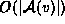
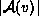
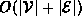
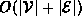

Data Structures and Algorithms
with Object-Oriented Design Patterns in C++
Data Structures and Algorithms
with Object-Oriented Design Patterns in C++The following four operations are used extensively in the implementations of many different graph algorithms:
When adjacency lists are used, the worst-case running time is , since  is the length of the adjacency list associated with vertex v.
This is the operation performed by the SelectEdge member function of the Graph class.
On the other hand, to enumerate all the edges when using adjacency
lists requires the traversal of  lists.
In all there are
lists.
In all there are  edges.
Therefore the worst case running time is .
edges.
Therefore the worst case running time is .
This operation is performed using the iterator returned by the Edges member function of the Graph class.
Enumerating the edges emanating from vertex v is a trivial operation when using adjacency lists. All we need do is traverse the list. This takes time in the worst case.
This operation is performed using the iterator returned by the EmanatingEdges member function of the Graph class.
Enumerating the edges incident on vertex w is a non-trivial operation when using adjacency lists. It is necessary to search every adjacency list in order to find all the edges incident on a given vertex. Therefore, the worst-case running time is .
This operation is performed using the iterator returned by the IncidentEdges member function of the Graph class.
 summarizes these running times.
summarizes these running times.
| representation scheme | ||
|
operation | adjacency matrix | adjacency list |
| find edge (v,w) | O(1) | |
| enumerate all edges | | |
| enumerate edges emanating from v | ||
| enumerate edges incident on w | ||
 Copyright © 1997 by Bruno R. Preiss, P.Eng. All rights reserved.
Copyright © 1997 by Bruno R. Preiss, P.Eng. All rights reserved.